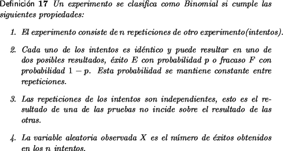
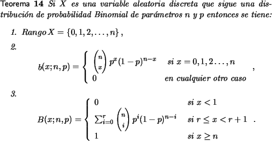

Distribución de Probabilidad Binomial.
Existen diversos experimentos para los cuales el espacio muestral solamente admite dos valores, pueden ser cualitativos, se cumple o no se cumple alguna condición o cuantitativos 0 o 1. No hay diferencia y para efectos de la distribución basta con que los consideremos como éxito y fallo, con valores asignados de 1 y 0, respectivamente.
Cuando un experimento como éste se ejecuta una sola vez se dice
que es un ensayo tipo Bernoulli, la variable aleatoria solo
toma dos valores que corresponden con
X(éxito) = 1 y
X(fallo) = 0 y la distribución de probabilidad
también es bastante simplificada con valores fX(1) = p, y
fX(0) = 1 - p.
Dado un experimento que consiste de una secuencia de n ensayos independientes tipo Bernoulli, donde la probabilidad, p, de éxito no cambia entre ensayo y ensayo del experimento. Si la variable aleatoria que interesa cuantificar es el número de éxitos en los n ensayos, la variable recibe el nombre de Binomial.
Por ejemplo se lanza una moneda el aire en 8 ocasiones y se toma como variable aleatoria el número de veces que cae corona, o se registran los próximos 100 nacimientos en un hospital y se toma como variable aleatoria el número de mujeres que nacen.

En una variable binomial se tienen por parámetros la probabilidad de éxito en cada ensayo, p, y el total de ejecuciones, n, y como variable aleatoria X, el número de éxitos digamos x. La distribución de probabilidad la denotaremos por b(x;n, p). Para la distribución de probabilidad acumulada usamos la notación B(x;n, p).

La demostración de la
primera de las aseveraciones hechas en el teorema resulta directa, pues
puede haber desde ninguno hasta, a lo
sumo, n éxitos.
La segunda parte resulta de que la ocurrencia de exactamente x éxitos es la conjunción de que en x cualesquiera de los ensayos ocurra éxito y en los n - x restantes ocurra fallo, de acuerdo con la ley del producto la probabilidad es de px(1 - p)n - x. Como no importa cuales x de los ensayos resulten en éxito entonces debe de contarse todas las posibles maneras de elegir x ensayos entre los n.
La tercera parte es simplemente una adaptación de la definición de la función de probabilidad acumulada.
Vale la pena destacar que este tipo de cálculos es bastante laborioso, no obstante se dispone de tablas que resumen algunos de los valores más frecuentes. Mejor aún en la versión electrónica de estas notas se da una barra de herramientas que permiten realizar en forma directa los cálculos, que involucren binomiales.
Ejemplo 19
Veinte palomas vuelan hacia 3 nidos. Cada una de ellas se ubicará en forma aleatoria en alguno de los nidos, además una paloma se ubica en forma independiente de lo que hicieron o harán las otras. Calcule las siguientes probabilidades.
- Exactamente 4 palomas se ubican en el primer nido.
- A lo sumo cuatro palomas se ubican en el primer nido.
- Al menos cuatro palomas se ubican en el primer nido.
Solución
Dadas las condiciones indicadas, el arribo de cada paloma a algún nido es un ensayo de Bernoulli donde éxito es que la paloma se ubique en el nido 1 y fracaso es que no lo haga. La probabilidad de éxito es 1/3 y la variable aleatoria que indica el número de palomas que quedan ubicadas en el primer nido sigue una distribución tipo binomial: b(x;20, 1/3), y las respuestas a los problemas son
-
P[X = 4] = b(4;20, 1/3).
3. Al menos cuatro puede verse como el complemento de a lo sumo tres, por tanto la la respuesta es
Ejemplo 20
Suponga que el 20 por ciento de los componentes fabricados por una planta no pasan un control de calidad. Cuál es la probabilidad de que en una muestra de 15 componentes consecutivos a lo sumo 8 no pasen la prueba.
Solución
Este es un experimento de tipo binomial, que tiene 15 repeticiones del mismo experimento, con una probabilidad de éxito de 0.2. Si Y es la variable aleatoria que indica el número de componentes defectuosos, interesa calcular el valor de la expresión:
Sobre ese mismo ejemplo:
- La probabilidad que exactamente 8 componentes no pasen la prueba:
b(8, 15, 0.2) = B(8, 15, 0.2) - B(7, 15, 0.2) = 0.9992 - 0.9958.
- la probabilidad que fallen al menos 8 es:
P[Y
 8] = 1 - P[Y
8] = 1 - P[Y  7] = 1 - B(7, 15.0.2) = 1 - 0.9958.
7] = 1 - B(7, 15.0.2) = 1 - 0.9958.
Algunas veces se acepta que un experimento se porta como un binomial, aunque cumpla en forma parcial las reglas citadas en la definición. Por ejemplo en problemas de elección sin reposición la probabilidad de cada experimento está influenciada por los resultados de los anteriores. No obstante cuando el número de intentos es relativamente pequeño respecto al espacio muestral el comportamiento de la variable aleatoria puede aproximarse como si fuera binomial.
Ejemplo 21
Suponga que en una ciudad viven un millón de personas de los cuales sólo 800000 son nativos de la ciudad. Si se toma una muestra de 10 ciudadanos al azar cual es la probabilidad de que a lo sumo dos de ellos no sean nativos.
Solución
Si bien la secuencia de 10 experimentos consecutivos de escoger un ciudadano y que no sea nativo tienen probabilidades diferentes también es cierto que estas probabilidades prácticamente son iguales, en un caso como este podemos asumir que el comportamiento de la variable aleatoria Y que indica el número de no nativos en la muestra se aproxima por una binomial. Así la probabilidad solicitada es: